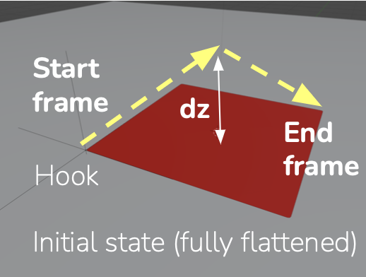

Wrinkle Attentive Fabric Manipulation Metric
Columbia University, Course Project, COMS 6998 Topics in Robot Learning
Sept. 2022 - Dec. 2022
Abstract
Garment folding is a popular topic in deformable object manipulation.
While most studies use the Intersection over Union (IoU) metric to evaluate the quality of folds, there are many cases where this metric can produce a misleading quantification, especially when wrinkles are present.
In this work, we seek to overcome the limitations of IoU by designing an enhanced metric that combines wrinkle-detection scores with Generalized IoU (GIoU).
To demonstrate the effectiveness of this metric, we build a simulation environment and train a model to fold a square fabric.
We compare the results under our new metric with traditional IoU approaches and demonstrate that our metric is superior in evaluating folding quality.
We also show that our metric has more than enough sensitivity when applied to real-world data captured by a off-the-shelf RGB-D camera.
Our metric provides a useful way to evaluate deformable manipulation, and it has the potential to be applied to downstream cloth-folding tasks, especially in self-supervised learning.
Loss values of five folding results calculated from using our combined metric.
From left to right the folding quality gets better while the loss value gets smaller.
The rightmost image is the goal state (0 loss).

The cloth folding environment setup in Blender.
The robot gripper is represented by a hook entity that follows two linear track during folding,
parameterized by the lifting height and the end frame when the gripper finishes its motion.
My Contribution
◊ Collaborated in developing the metric by proposing the fomat and evaluation of the Z-score of the folded fabric.
◊ Developed a fabric-folding simulation environment from scratch in Blender through Blender-python API.
◊ Collected and integrated codes from three contributors together, ran a hill-climbing algorithm for training and evaluated the final model.